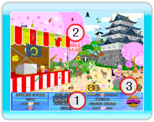

12 |
Stufe |
 |
Stufe
 1: Gegenstände Hier ist eine Übersicht der Gegenstände, die du finden musst. Die Objekte, die du gefunden hast, werden von der Liste gestrichen. Wenn du mit dem Cursor auf den Namen eines Gegenstandes zeigst, wird die Schrift größer. 2: MISS Wenn an der Stelle, die du mit dem A-Knopf drückst, kein Gegenstand versteckt ist, bekommst du für diesen Fehler eine Zeitstrafe von 5 Sekunden. Spielst du mit mehreren Personen, wird dein Cursor für 5 Sekunden eingefroren. 3: MENU-Knopf Zurück zum Menü MENU Richte den Cursor auf eines der Felder und wähle es mit dem A-Knopf aus.  1: YES
1: YESZurück zum Spiel 2: NO Zurück zur Einführung TIPP Wenn du spielst, erscheint automatisch nach einer Minute ein Hinweis, wo du einen Gegenstand finden kannst. Kurz bevor der Hinweis erscheint, hörst du einen kurzen Ton. Nach dem ersten Hinweis erscheint alle 30 Sekunden ein neuer Hinweis. |
 |
 |
 |